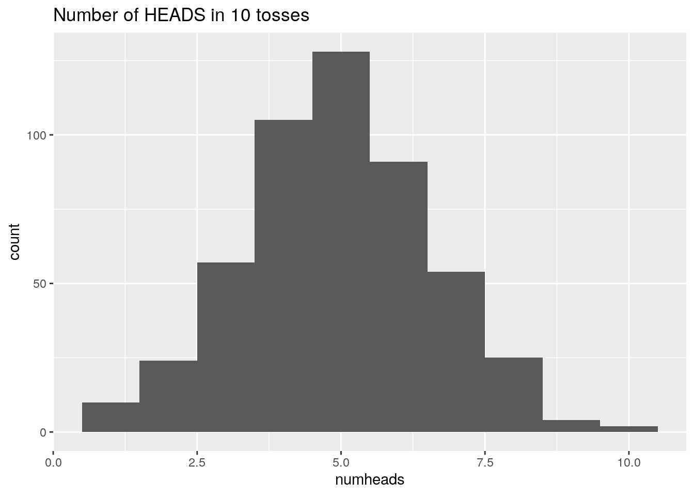
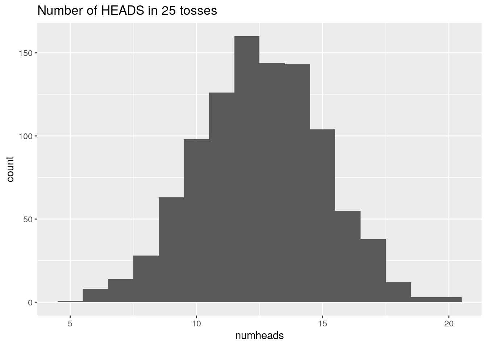
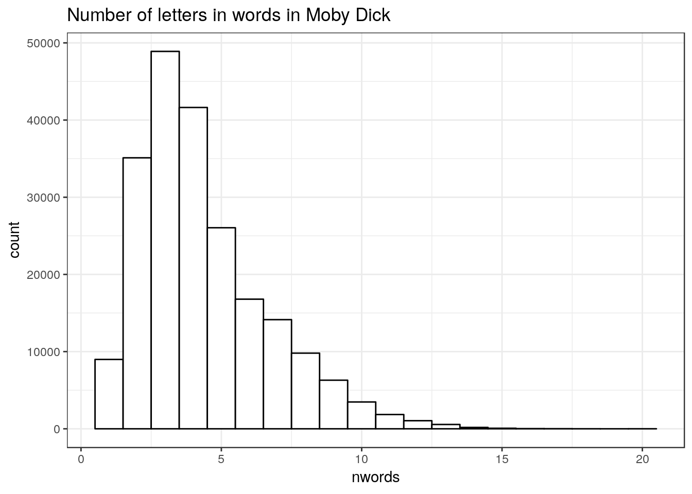

Chapter 12 Text Data
Many applications require the ability to manipulate and process text data. For example, an email spam filter takes as its input various features of email such as the sender, words in the subject, words in the body, the number and types of attachments, and so on. The filter then tries to build a classifier which can correctly classify a message as spam or not spam (aka ham). As another example, some works of literature, such as some of Shakespeare’s plays or some of the Federalist papers, have disputed authorship. By analyzing word use across many documents, researchers try to determine the author of the disputed work.
Working with text data requires functions that will, for example, concatenate and split text strings, modify strings (e.g., converting to lower-case or removing vowels), count the number of characters in a string, and so on. In addition to being useful in such contexts, string manipulation is helpful more generally in R—for example, to effectively construct titles for graphics.
As with most tasks, there are a variety of ways to accomplish these text processing tasks in R. The base R package has functions which work with and modify text strings. Another useful package which approaches these tasks in a slightly different way is stringr. As with graphics, we will focus mainly on one package to avoid confusion. In this case we will focus on the base R string processing functions, but will emphasize that stringr is also worth knowing.
The application to analyzing Moby Dick below comes from the book {Text Analysis with R for Students of Literature by Matthew L. Jockers.
12.1 Reading Text Data into R
Often text data will not be in a rectangular format that is suitable for reading into a data frame. For example, an email used to help train a spam filter, or literary texts used to help determine authorship of a novel are certainly not of this form. Often when working with text data we want to read the whole text object into a single R vector. In this case either the scan function or the readLines function are useful. The readLines function is typically more efficient, but scan is much more flexible.
As an example, consider the following email message and a plain text version of the novel Moby Dick by Herman Melville, the beginning of which is displayed subsequently.
From safety33o@l11.newnamedns.com Fri Aug 23 11:03:37 2002
Return-Path: <safety33o@l11.newnamedns.com>
Delivered-To: zzzz@localhost.example.com
Received: from localhost (localhost [127.0.0.1])
by phobos.labs.example.com (Postfix) with ESMTP id 5AC994415F
for <zzzz@localhost>; Fri, 23 Aug 2002 06:02:59 -0400 (EDT)
Received: from mail.webnote.net [193.120.211.219]
by localhost with POP3 (fetchmail-5.9.0)
for zzzz@localhost (single-drop); Fri, 23 Aug 2002 11:02:59 +0100 (IST)
Received: from l11.newnamedns.com ([64.25.38.81])
by webnote.net (8.9.3/8.9.3) with ESMTP id KAA09379
for <zzzz@example.com>; Fri, 23 Aug 2002 10:18:03 +0100
From: safety33o@l11.newnamedns.com
Date: Fri, 23 Aug 2002 02:16:25 -0400
Message-Id: <200208230616.g7N6GOR28438@l11.newnamedns.com>
To: kxzzzzgxlrah@l11.newnamedns.com
Reply-To: safety33o@l11.newnamedns.com
Subject: ADV: Lowest life insurance rates available!
moode
Lowest rates available for term life insurance! Take a moment
and fill out our online form
to see the low rate you qualify for.
Save up to 70% from regular rates! Smokers accepted!
http://www.newnamedns.com/termlife/
Representing quality nationwide carriers. Act now!The Project Gutenberg EBook of Moby Dick; or The Whale, by Herman Melville
This eBook is for the use of anyone anywhere at no cost and with
almost no restrictions whatsoever. You may copy it, give it away or
re-use it under the terms of the Project Gutenberg License included
with this eBook or online at www.gutenberg.org
Title: Moby Dick; or The Whale
Author: Herman Melville
Last Updated: January 3, 2009
Posting Date: December 25, 2008 [EBook #2701]
Release Date: June, 2001
Language: English
*** START OF THIS PROJECT GUTENBERG EBOOK MOBY DICK; OR THE WHALE ***
Produced by Daniel Lazarus and Jonesey
MOBY DICK; OR THE WHALE
By Herman MelvilleThe email message is available at http://blue.for.msu.edu/FOR875/data/email1.txt while the novel is available at http://blue.for.msu.edu/FOR875/data/mobydick.txt. We will read these into R using scan.
First, we read in the email message. The scan function has several possible arguments. For now the important arguments are the file to be read (the argument is named file), the type of data in the file (the argument is named what), and how the fields in the file are separated (the argument is named sep). To illustrate the sep argument, the file will be read into R once with sep = "" indicating that the separator is whitespace, and once with sep = "\n" indicating that the separator is the newline character, i.e., each field in the file is a line.
> u.email <- "http://blue.for.msu.edu/FOR875/data/email1.txt"
> email1 <- scan(u.email, what = "character", sep = "")
> length(email1)[1] 133> email1[1:10] [1] "From"
[2] "safety33o@l11.newnamedns.com"
[3] "Fri"
[4] "Aug"
[5] "23"
[6] "11:03:37"
[7] "2002"
[8] "Return-Path:"
[9] "<safety33o@l11.newnamedns.com>"
[10] "Delivered-To:" > email1 <- scan(u.email, what = "character", sep = "\n")
> length(email1)[1] 26> email1[1:10] [1] "From safety33o@l11.newnamedns.com Fri Aug 23 11:03:37 2002"
[2] "Return-Path: <safety33o@l11.newnamedns.com>"
[3] "Delivered-To: zzzz@localhost.example.com"
[4] "Received: from localhost (localhost [127.0.0.1])"
[5] "\tby phobos.labs.example.com (Postfix) with ESMTP id 5AC994415F"
[6] "\tfor <zzzz@localhost>; Fri, 23 Aug 2002 06:02:59 -0400 (EDT)"
[7] "Received: from mail.webnote.net [193.120.211.219]"
[8] "\tby localhost with POP3 (fetchmail-5.9.0)"
[9] "\tfor zzzz@localhost (single-drop); Fri, 23 Aug 2002 11:02:59 +0100 (IST)"
[10] "Received: from l11.newnamedns.com ([64.25.38.81])" Note that when sep = "" was specified, every time whitespace was encountered R moved to a new element of the vector email1, and this vector ultimately contained 133 elements. When sep = "\n" was specified, all the text before a newline was put into one element of the vector, which ended up with 26 elements.
The scan function is quite flexible. In fact, read.table uses scan to actually read in the data. Read the help file for scan if more information is desired.
Next Moby Dick is read in line by line.
> u.moby <- "http://blue.for.msu.edu/FOR875/data/mobydick.txt"
> moby_dick <- scan(u.moby, what = "character", sep = "\n")
> moby_dick[1:25] [1] "The Project Gutenberg EBook of Moby Dick; or The Whale, by Herman Melville"
[2] "This eBook is for the use of anyone anywhere at no cost and with"
[3] "almost no restrictions whatsoever. You may copy it, give it away or"
[4] "re-use it under the terms of the Project Gutenberg License included"
[5] "with this eBook or online at www.gutenberg.org"
[6] "Title: Moby Dick; or The Whale"
[7] "Author: Herman Melville"
[8] "Last Updated: January 3, 2009"
[9] "Posting Date: December 25, 2008 [EBook #2701]"
[10] "Release Date: June, 2001"
[11] "Language: English"
[12] "*** START OF THIS PROJECT GUTENBERG EBOOK MOBY DICK; OR THE WHALE ***"
[13] "Produced by Daniel Lazarus and Jonesey"
[14] "MOBY DICK; OR THE WHALE"
[15] "By Herman Melville"
[16] "Original Transcriber's Notes:"
[17] "This text is a combination of etexts, one from the now-defunct ERIS"
[18] "project at Virginia Tech and one from Project Gutenberg's archives. The"
[19] "proofreaders of this version are indebted to The University of Adelaide"
[20] "Library for preserving the Virginia Tech version. The resulting etext"
[21] "was compared with a public domain hard copy version of the text."
[22] "In chapters 24, 89, and 90, we substituted a capital L for the symbol"
[23] "for the British pound, a unit of currency."
[24] "ETYMOLOGY."
[25] "(Supplied by a Late Consumptive Usher to a Grammar School)" You will notice that the scan function ignored blank lines in the file. If it is important to preserve blank lines, the argument blank.lines.skip = FALSE can be supplied to scan.
The file containing the novel contains some introductory and closing text that is not part of the original novel. If we are interested in Melville’s writing, we should remove this text. By inspection we can discover that the novel’s text begins at position 408 and ends at position 18576.
> moby_dick <- moby_dick[408:18576]
> length(moby_dick)[1] 18169> moby_dick[1:4][1] "CHAPTER 1. Loomings."
[2] "Call me Ishmael. Some years ago--never mind how long precisely--having"
[3] "little or no money in my purse, and nothing particular to interest me on"
[4] "shore, I thought I would sail about a little and see the watery part of" > moby_dick[18165:18169][1] "they glided by as if with padlocks on their mouths; the savage sea-hawks"
[2] "sailed with sheathed beaks. On the second day, a sail drew near, nearer,"
[3] "and picked me up at last. It was the devious-cruising Rachel, that in"
[4] "her retracing search after her missing children, only found another"
[5] "orphan." 12.2 The paste Function
The paste function concatenates vectors after (if necessary) converting the vectors to character.
> paste("Homer Simpson", "is", "Bart Simpson's", "father")[1] "Homer Simpson is Bart Simpson's father"> n <- 10
> paste("The value of n is", n)[1] "The value of n is 10"> paste(c("pig", "dog"), 3)[1] "pig 3" "dog 3"By default the paste function separates the input vectors with a space. But other separators can be specified.
> paste("mail", "google", "com", sep = ".")[1] "mail.google.com"> paste("and", "or", sep = "/")[1] "and/or"> paste(c("dog", "cat", "horse", "human", "elephant"), "food")[1] "dog food" "cat food" "horse food"
[4] "human food" "elephant food"Sometimes we want to take a character vector with \(n\) elements and create a character vector with only one element, which contains all \(n\) character strings. Setting the collapse argument to something other than the default NULL tells R we want to do this, and allows specification of the separator in the collapsed vector.
> paste(c("one", "two", "three", "four", "five"), c("six",
+ "seven", "eight", "nine", "ten"))[1] "one six" "two seven" "three eight"
[4] "four nine" "five ten" > paste(c("one", "two", "three", "four", "five"), c("six",
+ "seven", "eight", "nine", "ten"), collapse = ".")[1] "one six.two seven.three eight.four nine.five ten"> paste(c("one", "two", "three", "four", "five"), c("six",
+ "seven", "eight", "nine", "ten"), collapse = "&&")[1] "one six&&two seven&&three eight&&four nine&&five ten"> paste(c("one", "two", "three", "four", "five"), c("six",
+ "seven", "eight", "nine", "ten"), collapse = " ")[1] "one six two seven three eight four nine five ten"In the example above by default paste created a vector with five elements, each containing one input string from the first input vector and one from the second vector, pasted together. When a non NULL argument was specified for collapse, the vector created had one element, with the pasted strings separated by that argument.58
Also don’t forget that R “recycles” values from vectors if two or more different length vectors are provided as input.
> paste(c("a", "b"), 1:10, sep = "") [1] "a1" "b2" "a3" "b4" "a5" "b6" "a7" "b8"
[9] "a9" "b10"> paste(c("a", "b"), 1:9, sep = "")[1] "a1" "b2" "a3" "b4" "a5" "b6" "a7" "b8" "a9"Next, consider writing a function which simulates repeatedly tossing a coin \(n\) times, counting the number of HEADS out of the \(n\) tosses. For the first five repetitions of \(n\) tosses, the function will print out the number of HEADS (for example if there are 7 HEADS in the \(n=10\) tosses the function prints “The number of HEADS out of 10 tosses is 7.” The function returns a histogram of the number of HEADS, with a title stating “Number of HEADS in ?? tosses” where ?? is replaced by the number of tosses. The paste function will help greatly.
> coin_toss <- function(n = 10, iter = 500) {
+ require(ggplot2)
+ df <- data.frame(numheads = numeric(iter))
+ for (i in 1:iter) {
+ df$numheads[i] <- rbinom(1, n, 0.5)
+ if (i <= 5) {
+ print(paste("The number of HEADS out of", n,
+ "tosses is", df$numheads[i]))
+ }
+ }
+ ggplot(data = df, aes(x = numheads)) + geom_histogram(binwidth = 1) +
+ ggtitle(paste("Number of HEADS in", n, "tosses"))
+ }
> coin_toss()Warning in rbinom(1, n, 0.5): '.Random.seed[1]' is not
a valid integer, so ignored[1] "The number of HEADS out of 10 tosses is 6"
[1] "The number of HEADS out of 10 tosses is 5"
[1] "The number of HEADS out of 10 tosses is 2"
[1] "The number of HEADS out of 10 tosses is 4"
[1] "The number of HEADS out of 10 tosses is 8"
> coin_toss(n = 25, iter = 1000)[1] "The number of HEADS out of 25 tosses is 13"
[1] "The number of HEADS out of 25 tosses is 7"
[1] "The number of HEADS out of 25 tosses is 13"
[1] "The number of HEADS out of 25 tosses is 14"
[1] "The number of HEADS out of 25 tosses is 11"
Let’s now return to the object moby_dick that contains the text of the novel. If we want to analyze word choice, word frequency, etc., it would be helpful to form a vector in which each element is a word from the novel. One way to do this is to first paste the current version of the moby_dick variable into a new version which is one long vector with the lines pasted together. To illustrate, we will first do this with a much smaller object that shares the structure of moby_dick.
> small_novel <- c("First line", "Second somewhat longer line",
+ "third line.")
> small_novel[1] "First line"
[2] "Second somewhat longer line"
[3] "third line." > small_novel <- paste(small_novel, collapse = " ")
> length(small_novel)[1] 1> small_novel[1] "First line Second somewhat longer line third line."Now we do the same with the actual novel.
> moby_dick <- paste(moby_dick, collapse = " ")
> length(moby_dick)[1] 1At this point moby_dick contains a single very long character string. Next we will separate this string into separate words and clean up the resulting vector a bit.
12.3 More String Processing Functions
Common string processing tasks include changing case between upper and lower, extracting and/or replacing substrings of a string, trimming a string to a specified width, counting the number of characters in a string, etc.
12.3.1 tolower and toupper
R contains functions tolower and toupper which very simply change the case of all characters in a string.
> x <- "aBCdefG12#"
> y <- x
> tolower(x)[1] "abcdefg12#"> toupper(y)[1] "ABCDEFG12#"If we are interested in frequencies of words in Moby Dick, converting all the text to the same case makes sense, so for example the word “the” at the beginning of a sentence is not counted differently than the same word in the middle of a sentence.
> moby_dick <- tolower(moby_dick)12.3.2 nchar and strsplit
The function nchar counts the number of characters in a string or strings.
> nchar("dog")[1] 3> nchar(c("dog", "cat", "horse", "elephant"))[1] 3 3 5 8> nchar(c("dog", "cat", "horse", "elephant", NA, "goat"))[1] 3 3 5 8 NA 4> nchar(c("dog", "cat", "horse", "elephant", NA, "goat"),
+ keepNA = FALSE)[1] 3 3 5 8 2 4> nchar(moby_dick)[1] 1190309By default nchar returns NA for a missing value. If you want nchar to return 2 for a NA value, you can set keepNA = TRUE.59
The function strsplit splits the elements of a character vector. The function returns a list, and often the unlist function is useful to convert the list into an atomic vector.
> strsplit(c("mail.msu.edu", "mail.google.com", "www.amazon.com"),
+ split = ".", fixed = TRUE)[[1]]
[1] "mail" "msu" "edu"
[[2]]
[1] "mail" "google" "com"
[[3]]
[1] "www" "amazon" "com" > unlist(strsplit(c("mail.msu.edu", "mail.google.com", "www.amazon.com"),
+ split = ".", fixed = TRUE))[1] "mail" "msu" "edu" "mail" "google"
[6] "com" "www" "amazon" "com" > unlist(strsplit(c("dog", "cat", "pig", "horse"), split = "o",
+ fixed = TRUE))[1] "d" "g" "cat" "pig" "h" "rse"Setting the argument fixed to TRUE tells R to match the value of split exactly when performing the split. The function can be much more powerful if the value of split is a regular expression, which can for example ask for splits at any vowels, etc. We will not go in depth on Regular Expressions here, but we will make some use of regular expressions on a case-by-case basis prior to that. Regular expressions are very powerful, so if this chapter interests you, we suggest researching regular expressions on your own (as always there are plenty of free resources online).
> unlist(strsplit(c("dog", "cat", "pig", "horse", "rabbit"),
+ split = "[aeiou]")) [1] "d" "g" "c" "t" "p" "g" "h" "rs" "r" "bb"
[11] "t" The regular expression [aeiou] represents any of the letters a, e, i, o, u. In general a string of characters enclosed in square brackets indicates any one character in the string.
> unlist(strsplit(c("dog", "cat", "pig", "horse", "rabbit"),
+ split = "[aorb]")) [1] "d" "g" "c" "t" "pig" "h" "" "se"
[9] "" "" "" "" "it" The regular expression [aorb] represents any of the letters a, o, r, b.
> unlist(strsplit(c("a1c2b", "bbb2bc3f"), split = "[1-9]"))[1] "a" "c" "b" "bbb" "bc" "f" The regular expression [1-9] represents any of the numbers 1, 2, 3, 4, 5, 6, 7, 8, 9.
> unlist(strsplit(c("aBc1fGh", "1TyzaaG"), split = "[^a-z]"))[1] "a" "c" "f" "h" "" "" "yzaa"The regular expression [a-z] represents any lower case letter. The caret ^ in front of a-z indicates “match any character except those in the following string” which in this case indicates “match any character that is NOT a lower case letter”.
Recall that the moby_dick vector now contains one long character string which includes the entire text of the novel, and that we would like to split it into separate words. We now know how to do this using strsplit and a regular expression. First a smaller example.
> unlist(strsplit(c("the rain", "in Spain stays mainly", "in",
+ "the plain"), split = "[^0-9A-Za-z]"))[1] "the" "rain" "in" "Spain" "stays"
[6] "mainly" "in" "the" "plain" > unlist(strsplit(c("the rain", "in Spain stays mainly", "in",
+ "the plain"), split = " ", fixed = TRUE))[1] "the" "rain" "in" "Spain" "stays"
[6] "mainly" "in" "the" "plain" Look at the regular expression. The caret says “match anything but” and then 0=9A-Za-z says “any digit, any lower-case letter, and any upper-case letter.” So the whole expression (including the fact that it is the value of the argument split) says “match anything but any digit, any lower-case letter, or any upper-case letter”.
Now we apply this to moby_dick.
> moby_dick <- unlist(strsplit(moby_dick, split = "[^0-9A-Za-z]"))Let’s see a bit of what we have.
> moby_dick[1:50] [1] "chapter" "1" ""
[4] "loomings" "" "call"
[7] "me" "ishmael" ""
[10] "some" "years" "ago"
[13] "" "never" "mind"
[16] "how" "long" "precisely"
[19] "" "having" "little"
[22] "or" "no" "money"
[25] "in" "my" "purse"
[28] "" "and" "nothing"
[31] "particular" "to" "interest"
[34] "me" "on" "shore"
[37] "" "i" "thought"
[40] "i" "would" "sail"
[43] "about" "a" "little"
[46] "and" "see" "the"
[49] "watery" "part" There is a small problem: Some of the “words” are blank. The following small example indicates why this happened.
> unlist(strsplit(c("the rain", "in Spain stays mainly",
+ "in", "the plain"), split = "[^0-9A-Za-z]")) [1] "the" "rain" "in" "Spain" ""
[6] "" "" "stays" "mainly" "in"
[11] "the" "plain" It is not too hard to remove the blank words.
> length(moby_dick)[1] 253993> not.blanks <- which(moby_dick != "")
> moby_dick <- moby_dick[not.blanks]
> length(moby_dick)[1] 214889> moby_dick[1:50] [1] "chapter" "1" "loomings"
[4] "call" "me" "ishmael"
[7] "some" "years" "ago"
[10] "never" "mind" "how"
[13] "long" "precisely" "having"
[16] "little" "or" "no"
[19] "money" "in" "my"
[22] "purse" "and" "nothing"
[25] "particular" "to" "interest"
[28] "me" "on" "shore"
[31] "i" "thought" "i"
[34] "would" "sail" "about"
[37] "a" "little" "and"
[40] "see" "the" "watery"
[43] "part" "of" "the"
[46] "world" "it" "is"
[49] "a" "way" (In this example it would have been more efficient to replace
> moby_dick <- unlist(strsplit(moby_dick, split = "[^0-9A-Za-z]"))> moby_dick2 <- unlist(strsplit(moby_dick, split = " ", fixed = TRUE))Then the second step of selecting the non-blank words would not have been necessary. But regular expressions will be essential going forward, so it was worthwhile using regular expressions even if they do not provide the most efficient method.)
12.3.3 Practice Exercise
Use strsplit() and regular expressions to split the following strings into their respective words (i.e. write a regular expression that will match the - and . character). Your output should be a vector (not a list).
> strings <- c("Once-upon", "a.time", "there", "was-a", "man.named",
+ "Bob") [1] "Once" "upon" "a" "time" "there" "was"
[7] "a" "man" "named" "Bob" 12.3.4 nchar Again
Now that the vector moby_dick contains each word in the novel as a separate element, it is relatively easy to do some basic analyses. For example the nchar function can give us a count of the number of characters in each element of the vector, i.e., can give us the number of letters in each word in the novel.
> moby_dick_nchar <- nchar(moby_dick)
> moby_dick_nchar[1:50] [1] 7 1 8 4 2 7 4 5 3 5 4 3 4 9 6 6 2
[18] 2 5 2 2 5 3 7 10 2 8 2 2 5 1 7 1 5
[35] 4 5 1 6 3 3 3 6 4 2 3 5 2 2 1 3> max(moby_dick_nchar)[1] 20> ggplot(data = data.frame(nwords = moby_dick_nchar), aes(x = nwords)) +
+ geom_histogram(binwidth = 1, color = "black", fill = "white") +
+ ggtitle("Number of letters in words in Moby Dick") +
+ theme_bw()
> moby_dick_word_table <- table(moby_dick)
> moby_dick_word_table <- sort(moby_dick_word_table, decreasing = TRUE)
> moby_dick_word_table[1:50]moby_dick
the of and a to in that it his
14175 6469 6325 4636 4539 4077 3045 2497 2495
i he but s as with is was for
2114 1876 1805 1737 1720 1692 1690 1627 1593
all this at by whale not from him so
1515 1382 1304 1175 1150 1142 1072 1058 1053
on be one you there now had have or
1040 1032 907 884 854 779 767 754 689
were they like me then which what some their
677 649 639 630 628 625 611 608 604
when an are my no
601 590 587 587 581 12.3.5 substr and strtrim
The substr function can be used to extract or replace substrings. The first argument is the string to be manipulated, and the second and third arguments specify the first and last elements of the string to be extracted or to be replaced.
> x <- "Michigan"
> substr(x, 3, 4)[1] "ch"> substr(x, 3, 4) <- "CH"
> x[1] "MiCHigan"> x <- c("Ohio", "Michigan", "Illinois", "Wisconsin")
> substr(x, 2, 4)[1] "hio" "ich" "lli" "isc"> substr(x, 2, 4) <- "$#&"
> x[1] "O$#&" "M$#&igan" "I$#&nois" "W$#&onsin"The strtrim function trims a character string to a specified length.
> strtrim("Michigan", 1)[1] "M"> strtrim("Michigan", 4)[1] "Mich"> strtrim("Michigan", 100)[1] "Michigan"> strtrim(c("Ohio", "Michigan", "Illinois", "Wisconsin"),
+ 3)[1] "Ohi" "Mic" "Ill" "Wis"> strtrim(c("Ohio", "Michigan", "Illinois", "Wisconsin"),
+ c(3, 4, 5, 6))[1] "Ohi" "Mich" "Illin" "Wiscon"12.4 Homework
Exercise Text Data Learning objectives: read and write text data; concatenate text with the paste function, analyze text with nchar; practice with functions; manipulate strings with substr and strtrim.